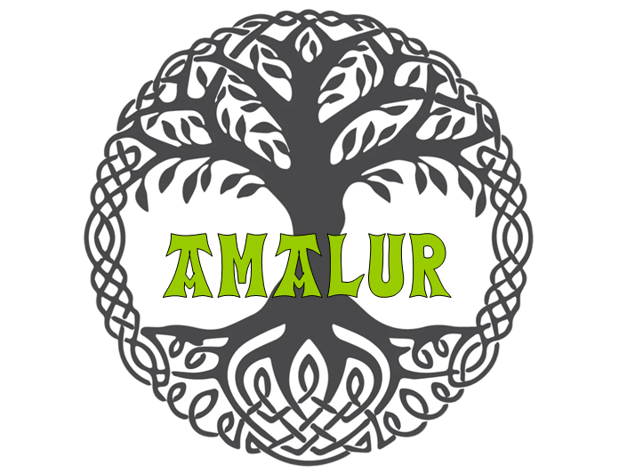

Amalur nace de una necesidad. Una intensa sensación de que la vida cotidiana
de mercados que nos intoxican, las políticas de derroche de alimentos y obsolescencia
programada, la cultura del consumismo y las industrias farmaceuticas que no curan,
el abuso de los recursos naturales y la contaminación medioambiental, no están siendo
el avance hacia el futuro que yo pensaba.